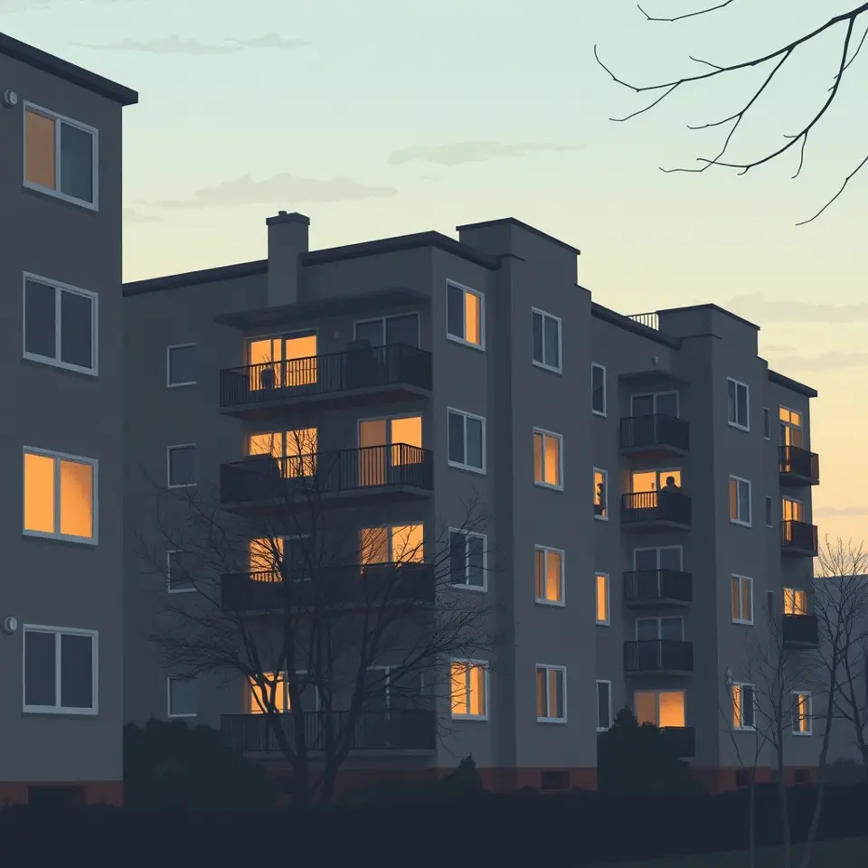

반포 아파트 부정청약 의혹 이혜훈 전 의원 송치
경찰이 반포 아파트 부정청약 의혹을 받는 이혜훈 전 의원을 송치했다.

핵심 정리
- 이혜훈 전 의원, 부정청약 의혹으로 송치
- 경찰, 반포 원펜타스 몰수 신청
- 분양계약 취소 절차 진행 중
경찰이 반포 아파트 부정청약 의혹을 받는 이혜훈 전 의원을 송치했다. 사기 혐의가 적용된 것으로 전해졌으며, 해당 아파트는 40억 원대 로또 아파트로 불린 단지다.
경찰은 반포 원펜타스에 대해 몰수를 신청한 것으로 알려졌다. 이와 함께 국토교통부가 사업주체에 통보하면서 분양계약 취소 절차가 진행되고 있다는 보도도 나왔다.
매체들은 강조한 지점이 달랐다. 일부 보도는 수사 결과가 아파트 소유 자체를 무효로 만들 수 있는지에 관심을 두었고, 다른 보도는 행정 절차인 분양계약 취소에 무게를 두었다.
향후 법원의 판단과 분양계약 취소 절차가 어떻게 마무리될지 주목된다.
이 소식을 다룬 보도